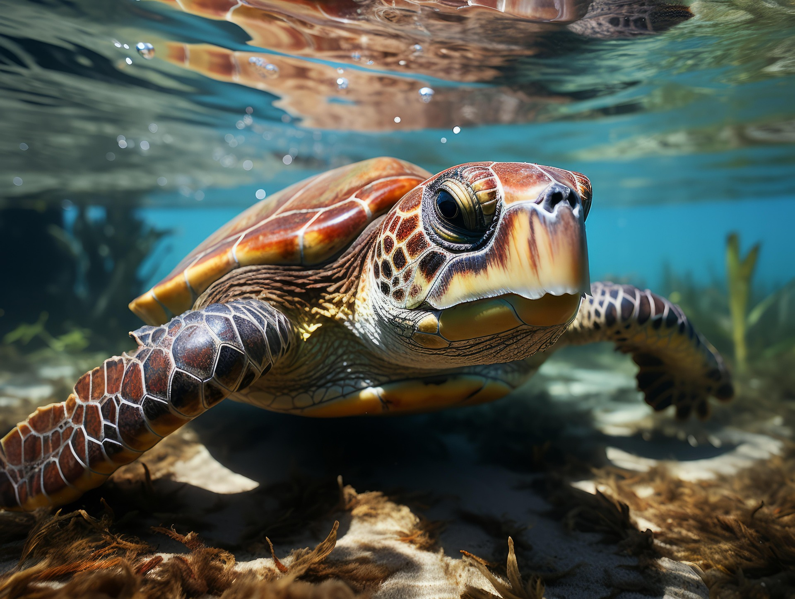

TORTUGA CAREY
Nombre
Nombre cientifico

La tortuga carey vive en mares tropicales y subtropicales, especialmente en arrecifes de coral. Se encuentra en regiones como el Caribe y las costas de América Latina. Es un animal marino que pasa casi toda su vida en el agua, pero las hembras salen a la playa para poner sus huevos. Es una nadadora ágil y suele alimentarse entre los corales. Generalmente es solitaria y recorre grandes distancias en el océano.
Caracteristicas: